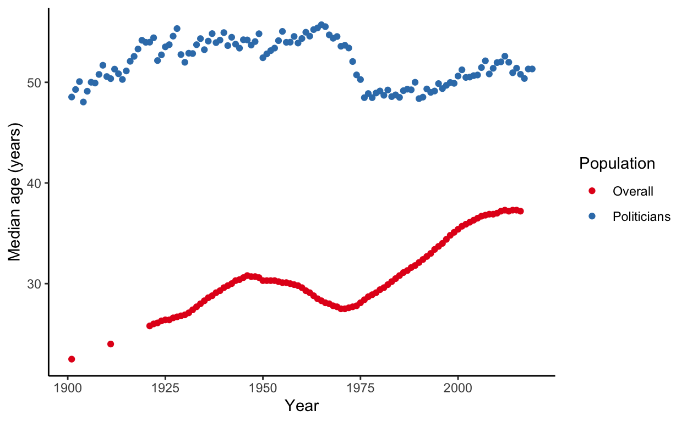

In this note I examine the average age of politicians in the Australian Federal Parliament on a daily basis. Using a publicly available dataset I find that generally the Senate is older than the House of Representatives. The average age increased from Federation in 1901 through to 1949, when an expansion of the parliament’s size likely brought many new politicians. I am unable to explain a sustained decline that occurred during the 1970s. From the 1980s onward there has been a gradual aging of both houses.
The average age of politicians in a parliament may have implications for the types of issues that are emphasised and the policies that are put in place. In this note, I examine the average age of Australian politicians in the Senate and the House of Representatives. In general the Senate tends to be slightly older than the House of Representatives. I find a gradual increase in the average age from Federation through to the 1940s. In 1949 there was an expansion of the parliament and the average age noticeably declined. After a period of relative stability in the 1950s and 1960s, there was another noticeable decrease in the 1970s, followed by a gradual aging.
The dataset that I used in this note was primarily collected from records from the Australian Parliamentary Library, Wikipedia, and the Australian Dictionary of Biography. The dataset comprises biographical, political, and other information about every person elected to either the House of Representatives or the Senate. The dataset is available as an R package: AustralianPoliticians (Alexander, 2019). R users can get the package using the devtools package (Wickham, Hester, and Chang, 2019). Non-R users can download the R datafiles from GitHub: https://github.com/RohanAlexander/AustralianPoliticians/tree/master/data.
# install.packages("devtools")
# devtools::install_github("RohanAlexander/AustralianPoliticians")
library(AustralianPoliticians)
library(lubridate)
library(tidyverse)The other packages that are required for the analysis are lubridate (Grolemund, Wickham, 2011), the tidyverse (Wickham, et al., 2019). Additionally this note draws on the knitr (Xie, 2020; Xie, 2015; and Xie 2014) and distill (Allaire, Iannone and Xie, 2018) packages.
There are 1,776 politicians in the package, with 1,203 having sat in the House of Representatives, which is the lower house, and 623 having sat in the Senate, which is the upper house. There is some overlap because there are people who sat in both houses.
The AustralianPoliticians package contains a number of datasets that are related by the uniqueID variable. This note requires the main dataset - ‘all’ - as well as two supporting datasets that provide more detailed information about the members - ‘by_division_mps’ - and the senators - ‘by_state_senators’.
# Get the members and the dates they were in the house
australian_mps <-
AustralianPoliticians::all %>%
filter(member == 1) %>%
left_join(AustralianPoliticians::by_division_mps,
by = "uniqueID") %>%
select(uniqueID, mpFrom, mpTo) %>%
mutate(house = "reps") %>%
rename(from = mpFrom,
to = mpTo)
# Get the senators and the dates they were in the senate
australian_senators <-
AustralianPoliticians::all %>%
filter(senator == 1) %>%
left_join(AustralianPoliticians::by_state_senators,
by = "uniqueID") %>%
select(uniqueID, senatorFrom, senatorTo) %>%
mutate(house = "senate") %>%
rename(from = senatorFrom,
to = senatorTo)
australian_politicians <- rbind(australian_mps, australian_senators)
rm(australian_senators, australian_mps)
# Change the names so that they print nicely in graphs/tables
australian_politicians <-
australian_politicians %>%
mutate(house =
case_when(
house == "senate" ~ "Senate",
house == "reps" ~ "HoR",
TRUE ~ "OH NO")
)
head(australian_politicians)
# A tibble: 6 x 4
uniqueID from to house
<chr> <date> <date> <chr>
1 Abbott1869 1913-05-31 1919-11-03 HoR
2 Abbott1886 1925-11-14 1929-10-12 HoR
3 Abbott1886 1931-12-19 1937-03-28 HoR
4 Abbott1891 1940-09-21 1949-10-31 HoR
5 Abbott1957 1994-03-26 2019-05-18 HoR
6 Abel1939 1975-12-13 1977-11-10 HoR For each day, I would like to know the average age of everyone sitting in the parliament. There are a variety of ways to do this, but one is to create a dataset of two columns: date and uniqueID. Both of these are repeated, so that for every date there is every uniqueID.
start_date <- ymd("1901-01-01")
end_date <- ymd("2019-12-31")
politicians_by_date <- tibble(
uniqueID = rep(australian_politicians$uniqueID %>% unique(),
end_date - start_date + 1),
date = rep(seq.Date(start_date, end_date, by = "day"),
australian_politicians$uniqueID %>% unique() %>% length()
)
)
head(politicians_by_date)
# A tibble: 6 x 2
uniqueID date
<chr> <date>
1 Abbott1869 1901-01-01
2 Abbott1886 1901-01-02
3 Abbott1891 1901-01-03
4 Abbott1957 1901-01-04
5 Abel1939 1901-01-05
6 Adams1951 1901-01-06Although the dataset is long at this point, it will be quite sparse as there are many combinations of date and uniqueID that are irrelevant. In the next step I check if each uniqueID was in parliament on each date, and filter away those that were not.
# Add an explicit end date to the uniqueIDs that are still in parliament and
# hence have NA in the date they left parliament.
australian_politicians$to[is.na(australian_politicians$to)] <- end_date
politicians_by_date <-
politicians_by_date %>%
left_join(australian_politicians,
by = "uniqueID"
)
politicians_by_date <-
politicians_by_date %>%
mutate(in_parliament_interval = interval(from, to),
in_parliament_at_date = if_else(date %within% in_parliament_interval,
1,
0)
) %>%
filter(in_parliament_at_date == 1) %>%
select(-in_parliament_interval,
-in_parliament_at_date,
-from,
-to)
head(politicians_by_date)
# A tibble: 6 x 3
uniqueID date house
<chr> <date> <chr>
1 Bonython1848 1901-04-13 HoR
2 Braddon1829 1901-04-25 HoR
3 Brown1861 1901-05-11 HoR
4 Cameron1851 1901-06-13 HoR
5 Chanter1845 1901-07-13 HoR
6 Chapman1864 1901-07-14 HoR Now that the dataset is a bit more tractable, I add the birthday of every uniqueID and then calculate their age, in days, for every date.
politicians_by_house_and_birthday <-
AustralianPoliticians::all %>%
select(uniqueID, birthDate, member, senator) %>%
pivot_longer(cols = c(member, senator),
names_to = "house",
values_to = "in_it"
) %>%
filter(in_it == 1) %>%
select(-in_it) %>%
mutate(house =
case_when(
house == "senator" ~ "Senate",
house == "member" ~ "HoR",
TRUE ~ "OH NO")
)
# Check if the catch-all has been invoked
# politicians_by_house_and_birthday[politicians_by_house_and_birthday$house == "OH NO",]
politicians_by_date <-
politicians_by_date %>%
left_join(politicians_by_house_and_birthday,
by = c("uniqueID", "house")
)
politicians_by_date <-
politicians_by_date %>%
filter(!is.na(birthDate)) %>% # I can't find Trish Wortley's birthday and also
# we don't know the birthdates of some of the politicians from around Federation.
mutate(age_as_at_that_date = date - birthDate)
head(politicians_by_date)
# A tibble: 6 x 5
uniqueID date house birthDate age_as_at_that_da…
<chr> <date> <chr> <date> <drtn>
1 Bonython18… 1901-04-13 HoR 1848-10-15 19172 days
2 Braddon1829 1901-04-25 HoR 1829-06-11 26250 days
3 Brown1861 1901-05-11 HoR 1861-10-06 14461 days
4 Cameron1851 1901-06-13 HoR 1851-11-03 18119 days
5 Chanter1845 1901-07-13 HoR 1845-02-11 20605 days
6 Chapman1864 1901-07-14 HoR 1864-07-10 13517 days I need to work out the average age for each day. There are some politicians for whom we do not know their exact birthdate. Those have been removed in this calculation.
average_age_by_date <-
politicians_by_date %>%
mutate(age_as_at_that_date = age_as_at_that_date / ddays(1)) %>% # This just
# converts it into a days count
group_by(date, house) %>%
summarise(average_age = median(age_as_at_that_date, na.rm = TRUE))
average_age_by_date <-
average_age_by_date %>%
mutate(average_age_in_years = average_age/365)
head(average_age_by_date)
# A tibble: 6 x 4
# Groups: date [3]
date house average_age average_age_in_years
<date> <chr> <dbl> <dbl>
1 1901-03-29 HoR 16765 45.9
2 1901-03-29 Senate 16086. 44.1
3 1901-03-30 HoR 17235 47.2
4 1901-03-30 Senate 18878. 51.7
5 1901-03-31 HoR 17236 47.2
6 1901-03-31 Senate 18878. 51.7I’ll do the same thing except to work out the average by election period.
average_age_by_election <-
politicians_by_date %>%
left_join(AustralianElections::elections %>%
rename(date = electionDate) %>%
select(-comment) %>%
mutate(house = "HoR"),
by = c("date", "house")) %>%
ungroup() %>%
filter(house == "HoR") %>%
arrange(date, uniqueID) %>%
mutate(is_election = if_else(is.na(electionWinner), 0, 1),
is_election = if_else(is_election == lag(is_election, default = 0), 0, is_election),
election_counter = cumsum(is_election))
average_age_by_election <-
average_age_by_election %>%
ungroup() %>%
mutate(age_as_at_that_date = age_as_at_that_date / ddays(1)) %>% # This just
# converts it into a days count
group_by(election_counter) %>%
summarise(average_age = median(age_as_at_that_date, na.rm = TRUE),
first_date = min(date)) %>%
mutate(average_age_in_years = average_age/365) %>%
ungroup() I THINK WE CAN DELETE THIS
Finally, I’ll just do some minor tidying.
# average_age_by_date <-
# average_age_by_date %>%
#
# average_age_by_date <-
# average_age_by_date %>%
# left_join(AustralianElections::elections %>%
# rename(date = electionDate) %>%
# select(-comment) %>%
# mutate(house = "reps"),
# by = c("date", "house")) %>%
# ungroup() %>%
# mutate(is_election = if_else(is.na(electionWinner), 0, 1),
# election_counter = cumsum(is_election))There are considerable changes over time (Figure 1)
average_age_by_date %>%
ggplot(aes(x = date, y = average_age_in_years, colour = house)) +
geom_point() +
labs(x = "Date",
y = "Average age (years)",
color = "House") +
theme_minimal() +
scale_color_brewer(palette = "Set1")Figure 1: Average age in the Australian Federal Parliament
We can also look at a summary of the results, averaged across days, on the basis of each election period (Table 1).
average_age_by_election %>%
select(-average_age) %>%
rename(`Election number` = election_counter,
`Period begins` = first_date,
`Average age (years)` = average_age_in_years) %>%
kable(caption = "Average age by for each period between lower house elections",
digits = 1,
booktabs = TRUE)| Election number | Period begins | Average age (years) |
|---|---|---|
| 1 | 1901-03-29 | 48.2 |
| 2 | 1903-12-16 | 48.8 |
| 3 | 1906-12-12 | 49.0 |
| 4 | 1910-04-13 | 50.1 |
| 5 | 1913-05-31 | 49.8 |
| 6 | 1914-09-05 | 51.9 |
| 7 | 1917-05-05 | 53.0 |
| 8 | 1919-12-13 | 52.2 |
| 9 | 1922-12-16 | 51.7 |
| 10 | 1925-11-14 | 52.3 |
| 11 | 1928-11-17 | 50.9 |
| 12 | 1929-10-12 | 49.4 |
| 13 | 1931-12-19 | 52.3 |
| 14 | 1934-09-15 | 51.1 |
| 15 | 1937-10-23 | 51.9 |
| 16 | 1940-09-21 | 52.2 |
| 17 | 1943-08-21 | 51.6 |
| 18 | 1946-09-28 | 53.3 |
| 19 | 1949-12-10 | 50.9 |
| 20 | 1951-04-28 | 52.4 |
| 21 | 1954-05-29 | 53.7 |
| 22 | 1955-12-10 | 52.4 |
| 23 | 1958-11-22 | 52.5 |
| 24 | 1961-12-09 | 53.5 |
| 25 | 1963-11-30 | 53.5 |
| 26 | 1966-11-26 | 52.5 |
| 27 | 1969-10-25 | 51.3 |
| 28 | 1972-12-02 | 49.5 |
| 29 | 1974-05-18 | 48.6 |
| 30 | 1975-12-13 | 47.1 |
| 31 | 1977-12-10 | 47.3 |
| 32 | 1980-10-18 | 48.3 |
| 33 | 1983-03-05 | 47.7 |
| 34 | 1984-12-01 | 48.2 |
| 35 | 1987-07-11 | 49.4 |
| 36 | 1990-03-24 | 48.5 |
| 37 | 1993-03-13 | 48.9 |
| 38 | 1996-03-02 | 48.9 |
| 39 | 1998-10-03 | 49.7 |
| 40 | 2001-11-10 | 50.7 |
| 41 | 2004-10-09 | 51.7 |
| 42 | 2007-11-24 | 51.2 |
| 43 | 2010-08-21 | 51.5 |
| 44 | 2013-09-07 | 50.0 |
| 45 | 2016-07-02 | 50.2 |
| 46 | 2019-05-18 | 51.1 |
To get a sense of whether the parliament is unusual we need know what is happening the broader population over this time. Fortunately I know someone who is fairly handy when it comes to demography who can help.
Although it’s going to average over elections, which we’ve seen is a big source of variation, we can create an average age for each year, and then compare that against data from the Australian Bureau of Statistics (ABS). The ABS provides an estimate of historical population statistics in 3105.0.65.001 - Australian Historical Population Statistics, 2016, which was released in 2019. I want the second data cube - 2 - Population Age and Sex Structure - and within that I want Table 2.18 - Median age by sex, states and territories, 30 June, 1861 onwards.
library(readxl)
library(janitor)
ABS_data <- read_excel("3105065001ds0002_2019.xls",
sheet = "Table 2.18",
skip = 4) %>%
janitor::clean_names() %>%
rename(area_and_type = x1,) %>%
select(-x1861, -x1870, -x1871, -x1881, -x1891)
ABS_data <-
ABS_data %>%
mutate(type = ifelse(area_and_type %in% c("Males", "Females", "Persons"), area_and_type, NA),
area_and_type = ifelse(is.na(type), area_and_type, NA)) %>%
select(area_and_type, type, everything()) %>%
fill(area_and_type, .direction = "down") %>%
mutate(area_and_type = str_remove(area_and_type, "\\(f\\)\\(g\\)"))
ABS_data <-
ABS_data %>%
filter(area_and_type == "Australia",
type == "Persons")
ABS_data <-
ABS_data %>%
pivot_longer(cols = starts_with("x"),
names_to = "year",
values_to = "median") %>%
mutate(year = str_remove(year, "x"),
year = as.integer(year)) %>%
rename(area = area_and_type)
average_age_by_year <-
politicians_by_date %>%
ungroup() %>%
mutate(year = year(date)) %>%
mutate(age_as_at_that_date = age_as_at_that_date / ddays(1)) %>% # This just
# converts it into a days count
group_by(year) %>%
summarise(average_age = median(age_as_at_that_date, na.rm = TRUE)) %>%
mutate(average_age_in_years = average_age/365) %>%
ungroup()
average_age_by_year %>%
left_join(ABS_data, by = "year") %>%
select(year, average_age_in_years, median) %>%
rename(Politicians = average_age_in_years,
Overall = median) %>%
pivot_longer(cols = c(Politicians, Overall),
names_to = "population",
values_to = "median") %>%
ggplot(aes(x = year, y = median, color = population)) +
geom_point() +
# geom_smooth() +
theme_classic() +
scale_color_brewer(palette = "Set1") +
labs(x = "Year",
y = "Median age (years)",
color = "Population")
Try put politician age on x axis and the population age on teh y axis. if they were the same then we expect to be on the 45 degree line.
In general, it would be worthwhile trying to model this.
Thanks very much to Ben Readshaw for motivating this note, and to Monica Alexander for her thoughtful comments.